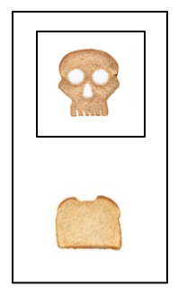

2020
- Simplicity and Scientific Progress (Genin) Logic and Interactive Rationality Simnar, Amsterdam, December 2020.
- Morals and Methodology (Genin) Seminar Series of the Cluster of Excellence “Machine Learning”, Tübingen, December 2020.
- Simplicity and Scientific Progress (Genin) Foundations of Probability Seminar, Princeton, November 2020.
- Simplicity and Scientific Progress (Genin) American Philosophical Association (APA) Central Division, Chicago, February 2020.
2019
- Simplicity and Scientific Progress (Genin) Logic and Philosophy of Science Research Group Talk, Toronto, October 2019.
- Progressive Methods for Causal Discovery (Genin) 16th International Congress of Logic, Methodoology and Philosophy of Science and Technology (CLMPST), Prague, August 2019.
- Topological Learning Theory (Genin) Workshop in Philosophy and Physical Computing, Virginia Tech, June 2019.
- Progressive Methods for Statistical Inquiry (Genin) Statistics Department Seminar, Washington University, St. Louis, March 22, 2019.
2018
- Inductive vs. Deductive Statistical Inference (Kelly, Genin) 26th Biennial Meeting of the Philosophy of Science Association, Seattle, November 1-4, 2018.
- The Topology of Statistical Inquiry (Genin) Workshop on Logic, Information and Topology CMU, Pittsburgh, October 20 2018.
- Progressive Methods for Casual Search (Genin) Workshop on Foundations of Causal Discovery CMU, Pittsburgh, September 22-23 2018.
- Topological Epistemology of Science (Kelly, Genin) North American Summer School on Logic, Language, and Information, Pittsburgh, June 23-29 2018.
- Simplicity and Scientific Progres (Genin, Kelly) 7th CSLI Workshop on Logic, Rationality & Intelligent Interaction, Stanford, June 2018. [slides]
- Reply to Kevin Dorst's "Two Cheers for Akrasia" (Genin) Meeting of the American Philosophical Association Eastern Division, Savannah, January 2018. [slides]
2017
- The Topology of Statistical Verifiability (Genin, Kelly) Theoretical Aspects of Rationality and Knowledge, Liverpool, July 2017. [slides] [poster]
- How Inductive is Bayesian Conditioning? (Genin) Experience and Updating Workshop, Bochum, July 2017. [abstract] [slides]
- The Topology of Statistical Inquiry (Genin) Workshop in Philosophy and Physical Computing, Virginia Tech, June 2017.
- What is Statistical Deduction? (Genin, Kelly) Workshop in Modality and Method, CMU, June 2017. [slides]
- Reply to Joel Pust's "Credal Omnisicience and Relvance Confirmation" (Genin) Meeting of the American Philosophical Association Central Division, Kansas City, March 2017. [slides]
2016
- Deduction, Induction, Statistics and Topology (Kelly, Genin). The Logical Structure of Correlated Information Change (LogiCIC Workshop), Amsterdam, November 2016. [slides]
- A Topological Explanation of Empirical Simplicity (Kelly, Genin). Philosophy of Science Association Meeting (PSA), Altanta, November 2016. [paper] [slides]
- Deduction, Induction, and Statistical Inference (Kelly, Genin). Philosophy of Scientific Experimentation 5, Univ. of Belgrade, September 2016. [video] [slides] [abstract]
-
Simplicity and Scientific Questions (Genin). Questions and Attitudes Workshop, CMU, June 2016. [slides]
2015
- Theory Choice, Theory Change, and Inductive Truth Conduciveness (Genin, Kelly).
- Bristol-Groeningen Summer School and Conference in Formal Epistemology, University of Bristol, July 2015. [slides]
- Fifteenth Conference on Theoretical Aspects of Rationality and Knowledge (TARK), Carnegie Mellon, June 2015. [paper] [poster]
- Formal Epistemology Workshop (FEW), University of Washington, St. Louis, May 2015. [slides]
- Fourth CSLI Workshop on Logic, Rationality, and Intelligent Interaction, Stanford, May 2015. (Invited Talk) [slides] [video 1] [video 2]
2014
- A Topological Theory of Empirical Simplicity (Kelly, Genin, Lin). The 24th Biennial Meeting of the Philosophy of Science Association (PSA), Chicago, November 2014. [paper] [slides]
- Learning with Ockham: Simplicity in Inductive Inference (Genin). Cool Logic Seminar, Institute for Logic, Language and Computation, Universiteit van Amsterdam, October 2014. [slides]
- An Epistemic Justification of Ockham's Razor (Kelly, Genin). Rene Descartes Lectures, Tilburg University, October 2014. [slides]
- The St. Petersburgh Paradox (Genin, Heesen). Swiss Institute Exhibition, New York City, July 2014. [video] [slides]
- Tracking and Statistical Knowledge (Genin). University of Miami 11th Annual Graduate Student Conference in Epistemology, January 2014. [paper] [slides]
- Contraction and the Loss of True Belief (Shear, Genin).
- North American Summer School in Logic, Language, and Information (NASSLI), Univeristy of Maryland, College Park, June 2014. [slides]
- Canadian Society for History and Philosophy of Science Annual Meeting (CSHPS), St. Catherines, Ontario, May 2014.
- Association of Symbolic Logic North American Meeting, University of Colorado, Boulder, May 2014.
- Colombian Conference in Logic, Epistemology and Philosophy of Science (Philogica III), Universidad de Los Andes, Bogota, Columbia, February 2014.